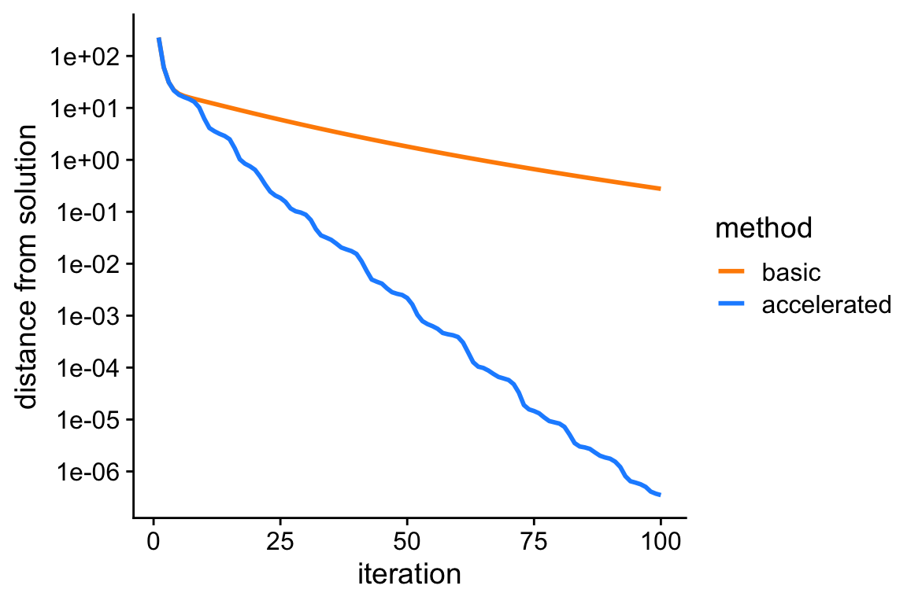
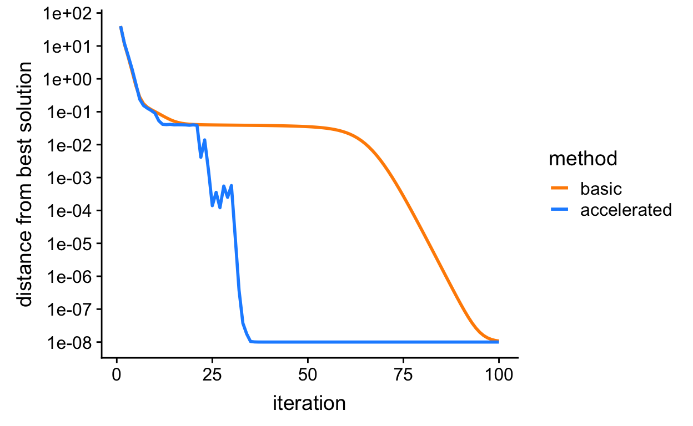

Last updated: 2020-05-12
Checks: 7 0
Knit directory: daarem/analysis/
This reproducible R Markdown analysis was created with workflowr (version 1.6.2). The Checks tab describes the reproducibility checks that were applied when the results were created. The Past versions tab lists the development history.
Great! Since the R Markdown file has been committed to the Git repository, you know the exact version of the code that produced these results.
Great job! The global environment was empty. Objects defined in the global environment can affect the analysis in your R Markdown file in unknown ways. For reproduciblity it’s best to always run the code in an empty environment.
The command set.seed(1) was run prior to running the code in the R Markdown file. Setting a seed ensures that any results that rely on randomness, e.g. subsampling or permutations, are reproducible.
Great job! Recording the operating system, R version, and package versions is critical for reproducibility.
Nice! There were no cached chunks for this analysis, so you can be confident that you successfully produced the results during this run.
Great job! Using relative paths to the files within your workflowr project makes it easier to run your code on other machines.
Great! You are using Git for version control. Tracking code development and connecting the code version to the results is critical for reproducibility.
The results in this page were generated with repository version b16e673. See the Past versions tab to see a history of the changes made to the R Markdown and HTML files.
Note that you need to be careful to ensure that all relevant files for the analysis have been committed to Git prior to generating the results (you can use wflow_publish or wflow_git_commit). workflowr only checks the R Markdown file, but you know if there are other scripts or data files that it depends on. Below is the status of the Git repository when the results were generated:
working directory clean
Note that any generated files, e.g. HTML, png, CSS, etc., are not included in this status report because it is ok for generated content to have uncommitted changes.
These are the previous versions of the repository in which changes were made to the R Markdown (analysis/linreg.Rmd) and HTML (docs/linreg.html) files. If you’ve configured a remote Git repository (see ?wflow_git_remote), click on the hyperlinks in the table below to view the files as they were in that past version.
| File | Version | Author | Date | Message |
|---|---|---|---|---|
| html | b58b5db | Peter Carbonetto | 2020-05-12 | Re-built linreg analysis after a couple small changes to the daarem |
| Rmd | 453b627 | Peter Carbonetto | 2020-05-12 | wflow_publish(“linreg.Rmd”) |
| html | 0279af9 | Peter Carbonetto | 2019-06-20 | Revised text in linreg analysis. |
| Rmd | 20a75b6 | Peter Carbonetto | 2019-06-20 | wflow_publish(“linreg.Rmd”) |
| html | a82f29e | Peter Carbonetto | 2019-06-20 | Adjusted fig. dimensions in linreg analysis. |
| Rmd | 98e78d8 | Peter Carbonetto | 2019-06-20 | wflow_publish(“linreg.Rmd”) |
| html | 3a81027 | Peter Carbonetto | 2019-06-20 | Re-ran wflow_publish(“linreg.Rmd”) after (small) changes to mr_ash code. |
| html | 5a7d3a8 | Peter Carbonetto | 2019-06-19 | Fixed Markdown in linreg analysis. |
| Rmd | 869405c | Peter Carbonetto | 2019-06-19 | wflow_publish(“linreg.Rmd”) |
| html | 639fe74 | Peter Carbonetto | 2019-06-19 | Ran wflow_publish(“linreg.Rmd”). |
| Rmd | c08a115 | Peter Carbonetto | 2019-06-19 | Added new results on mr-ash to linreg analysis. |
| Rmd | 6da0688 | Peter Carbonetto | 2019-06-19 | Moved ridge analysis to linreg. |
In this small demonstration, we show how the DAAREM method can be used to accelerate co-ordinate ascent algorithms for linear regression models.
We begin with a simple case in which the regression coefficients are independently and identically drawn from a simple normal prior with zero mean—i.e., ridge regression. The co-ordinate ascent update for \(\hat{\beta}_i\), the estimate of the regression coefficient for variable \(i\), is \[\hat{\beta}_i = \frac{(X^Ty)_i - \sum_{j\,\neq\,i} (X^T\!X)_{ij} \hat{\beta}_j} {(X^T\!X)_{ii} + 1/\sigma_0^2},\] where \(X\) is the \(n \times p\) matrix storing the \(n\) observations of \(p\) variables, \(y\) is the \(n\)-vector of regression outcomes, and the prior on the coefficients is assumed to be i.i.d normal with mean zero and variance \(\sigma^2 \sigma_0^2\), where \(\sigma^2\) is the variance of the residual.
These variables specify how the data are generated: n is the number of simulated samples, p is the number of simulated predictors, na is the number of simulated predictors that have a nonzero effect, se is the variance of the residual.
n <- 200
p <- 500
na <- 10
se <- 4This specifies the prior on the regression coefficients: it is normal with zero mean and variance s0.
s0 <- 1/seLoad some packages and function definitions used in the example below.
library(MASS)
library(daarem)
library(ggplot2)
library(cowplot)
theme_set(theme_cowplot())
source("../code/misc.R")
source("../code/datasim.R")
source("../code/ridge.R")
source("../code/mr_ash.R")Initialize the sequence of pseudorandom numbers.
set.seed(1)Simulate predictors with “decaying” correlations.
X <- simulate_predictors_decaying_corr(n,p,s = 0.5)
X <- scale(X,center = TRUE,scale = FALSE)Generate additive effects for the markers so that exactly na of them have a nonzero effect on the trait.
i <- sample(p,na)
b <- rep(0,p)
b[i] <- rnorm(na)Simulate the continuous outcomes, and center them.
y <- drop(X %*% b + sqrt(se)*rnorm(n))
y <- y - mean(y)Set the initial estimate of the coefficients.
b0 <- rep(0,p)Fit the ridge regression model by running 100 iterations of the basic co-ordinate ascent updates. Note that the co-ordinate ascent updates are very simple, and are easily implemented in a single line of R code; see the code for the ridge.update function.
out <- system.time(fit1 <- ridge(X,y,b0,s0,numiter = 100))
f1 <- ridge.objective(X,y,fit1$b,s0)
cat(sprintf("Computation took %0.2f seconds.\n",out["elapsed"]))
cat(sprintf("Objective value at solution is %0.12f.\n",f1))
# Computation took 0.43 seconds.
# Objective value at solution is -22.515798678253.Fit the ridge regression model again, this time using DAAREM to speed up the co-ordinate ascent algorithm.
out <- system.time(fit2 <- daarridge(X,y,b0,s0,numiter = 100))
f2 <- ridge.objective(X,y,fit2$b,s0)
cat(sprintf("Computation took %0.2f seconds.\n",out["elapsed"]))
cat(sprintf("Objective value at solution is %0.12f.\n",f2))
# Computation took 0.45 seconds.
# Objective value at solution is -22.238771667148.We see that the DAAREM solution is better (it has a higher posterior value).
Since the ridge estimate as a closed-form solution, we can easily compare the above estimates obtained via co-ordinate ascent against the actual solution.
bhat <- drop(solve(t(X) %*% X + diag(rep(1/s0,p)),t(X) %*% y))
f <- ridge.objective(X,y,bhat,s0)This plot shows the improvement in the solution over time for the two co-ordinate ascent algorithms: the vertical axis (“distance to best solution”) shows the difference between the largest log-posterior obtained, and the log-posterior at the actual ridge solution (bhat).
pdat <-
rbind(data.frame(iter = 1:100,dist = f - fit1$value,method = "basic"),
data.frame(iter = 1:100,dist = f - fit2$value,method = "accelerated"))
p <- ggplot(pdat,aes(x = iter,y = dist,col = method)) +
geom_line(size = 1) +
scale_y_continuous(trans = "log10",breaks = 10^seq(-8,4)) +
scale_color_manual(values = c("darkorange","dodgerblue")) +
labs(x = "iteration",y = "distance from solution")
print(p)
From this plot, we see that the accelerated algorithm progresses much more rapidly toward the solution; after 100 iterations, it nearly recovers the actual ridge estimates, whereas the unaccelerated version is still very far away.
Next, we consider a less simple case in which the regression coefficients are independently and identically drawn from mixture of zero-centered normals; this can be seen as a multivariate extension to the adaptive shrinkage model, so we call this “multivariate regression adaptive shrinkage” (mr-ash). Although posterior computations with this model are more difficult than with ridge regression, we can nonetheless obtain simple co-ordinate ascent updates for computing posterior expectations of the coefficients if we introduce a variational approximation to the posterior distribution. The full derivation is omitted here; see the code in the mr_ash_update function for details. (Note that the co-ordinate ascent updates, unlike the ridge regression updates, are only guaranteed to recover a local maximum of the objective function being optimized.)
These two variables specify the variances and mixture weights for the mixture-of-normals priors. Here we illustrate mr-ash with a prior that is a mixture of three normals.
s0 <- c(0.1,1,10)^2/se
w <- c(0.5,0.25,0.25)Fit the mr-ash model by running 200 iterations of the basic co-ordinate ascent updates.
out <- system.time(fit3 <- mr_ash(X,y,b0,se,s0,w,numiter = 100))
cat(sprintf("Computation took %0.2f seconds.\n",out["elapsed"]))
# Computation took 1.19 seconds.Fit the mr-ash model again, this time using DAAREM to speed up the co-ordinate ascent updates.
out <- system.time(fit4 <- daar_mr_ash(X,y,b0,se,s0,w,numiter = 100))
cat(sprintf("Computation took %0.2f seconds.\n",out["elapsed"]))
# Computation took 1.17 seconds.Like the plot above, this plot shows the improvement in the solution over time for the basic and accelated mr-ash co-ordinate ascent algorithms. Both algorithms end up at the same solution. But the “accelerated” version indeed arrives at the solution much more quickly, whereas the basic algorithm gets “stuck” for many iterations.
f <- max(c(fit3$value,fit4$value)) + 1e-8
pdat <-
rbind(data.frame(iter = 1:100,dist = f - fit3$value,method = "basic"),
data.frame(iter = 1:100,dist = f - fit4$value,method = "accelerated"))
p <- ggplot(pdat,aes(x = iter,y = dist,col = method)) +
geom_line(size = 1) +
scale_y_continuous(trans = "log10",breaks = 10^seq(-8,4)) +
scale_color_manual(values = c("darkorange","dodgerblue")) +
labs(x = "iteration",y = "distance from best solution")
print(p)
sessionInfo()
# R version 3.6.2 (2019-12-12)
# Platform: x86_64-apple-darwin15.6.0 (64-bit)
# Running under: macOS Catalina 10.15.4
#
# Matrix products: default
# BLAS: /Library/Frameworks/R.framework/Versions/3.6/Resources/lib/libRblas.0.dylib
# LAPACK: /Library/Frameworks/R.framework/Versions/3.6/Resources/lib/libRlapack.dylib
#
# locale:
# [1] en_US.UTF-8/en_US.UTF-8/en_US.UTF-8/C/en_US.UTF-8/en_US.UTF-8
#
# attached base packages:
# [1] stats graphics grDevices utils datasets methods base
#
# other attached packages:
# [1] cowplot_1.0.0 ggplot2_3.3.0 daarem_0.4.1 MASS_7.3-51.4
#
# loaded via a namespace (and not attached):
# [1] Rcpp_1.0.3 compiler_3.6.2 pillar_1.4.3 later_1.0.0
# [5] git2r_0.26.1 workflowr_1.6.2 tools_3.6.2 digest_0.6.23
# [9] evaluate_0.14 lifecycle_0.1.0 tibble_2.1.3 gtable_0.3.0
# [13] pkgconfig_2.0.3 rlang_0.4.5 yaml_2.2.0 xfun_0.11
# [17] withr_2.1.2 stringr_1.4.0 dplyr_0.8.3 knitr_1.26
# [21] fs_1.3.1 rprojroot_1.3-2 grid_3.6.2 tidyselect_0.2.5
# [25] glue_1.3.1 R6_2.4.1 rmarkdown_2.0 farver_2.0.1
# [29] purrr_0.3.3 magrittr_1.5 whisker_0.4 backports_1.1.5
# [33] scales_1.1.0 promises_1.1.0 htmltools_0.4.0 assertthat_0.2.1
# [37] colorspace_1.4-1 httpuv_1.5.2 labeling_0.3 stringi_1.4.3
# [41] munsell_0.5.0 crayon_1.3.4